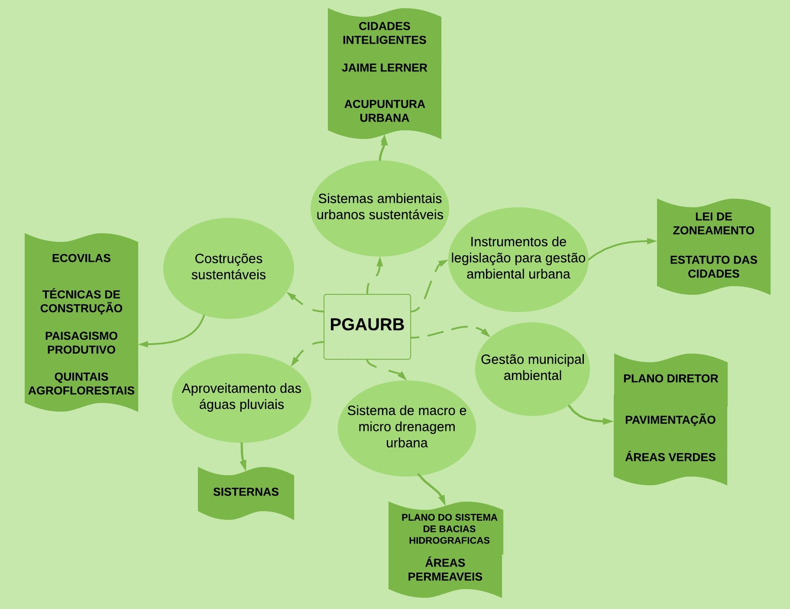
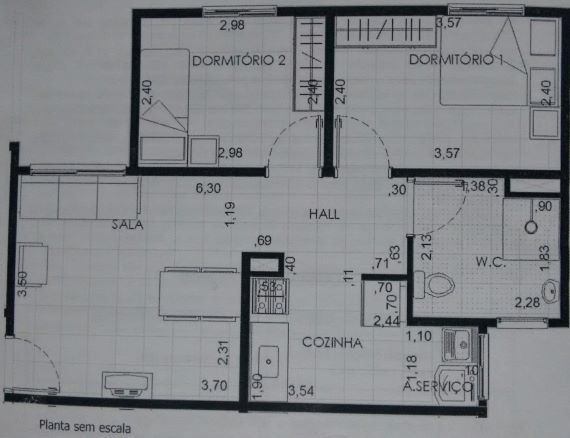
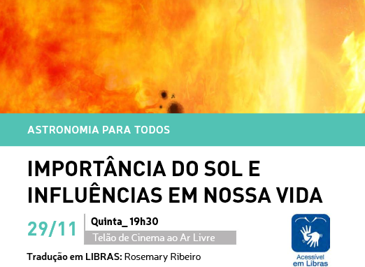
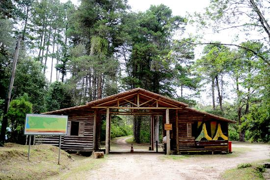
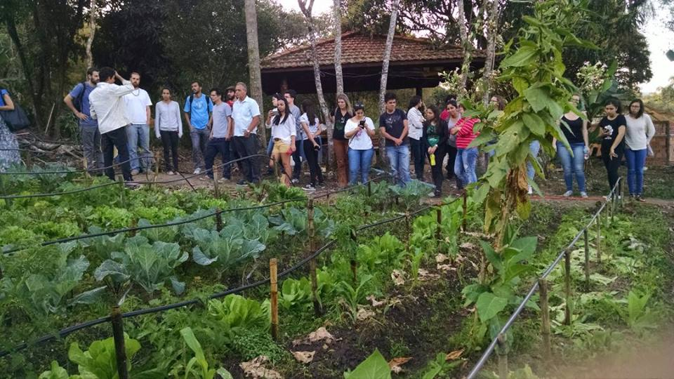

"Nosso padrão de civilização afeta o meio ambiente e a qualidade de vida nas cidades, por isso, é preciso repensar nosso modelo de desenvolvimento. A exemplo, as metrópoles, cresceram tanto sem que isso tenha significado mais distribuição de renda, qualidade de vida e equilíbrio ambiental"
Almanaque Brasil Socioambiental - ISA
O QUE FOI TRATADO EM AULA?
Assim como um diagrama a matéria foi se fragmentando em conteúdo, contexto, conceito e finalmente na aplicação. A partir da apresentação da ementa, foram feitas reflexões sobre o meio ambiente urbano, o qual estamos inseridos e os que estão a nossa volta, assim como, sua construção e as maneiras com que as sociedades interagem com o ambiente urbano aonde estabelecem seu cotidiano e o reflexo dessas conexões com o bem-estar e a saúde das populações e do meio ambiente.
As conexões foram apresentadas juntas a um arcabouço de referências para aprofundamento dos conteúdos, estas estão descritas logo abaixo:
Cidade Rural - Armando Holanda (Livro), O Homem Ecológico - Fernando Pacheco (Livro), A Escola Sustantável: eco-alfabetizando pelo ambiente (Livro) - Lucia Legam, Manual do Arquiteto Descalço - Johan Van Lengen (Livro), Direito e Paisagem: A afirmação de um direito fundamental indivudual e difuso, Cap. 13 - Mário S. Soleó Scalambrino (Livro), Arquitetura Hospitalar - João Filgueiras Lima (Livro), Bioarquiteto (apostila), O Semeador de Estrelas - Agricultura Biodinamica (Projeto), Selo Casa Saudavél (Projetos), Primeiro Cartel de Lampadas (documentário), Gaia Education (Desenvolvimento Sustentável), Geobiologia - Alan Lopes (Livro/projetos), A Felicidade por um Fio (filme), Ecovila Clareando/Piracicaba - SP, Hectare Sustentável - IPEC, Cidades em Transição (Movemento urbano), Quincas Berro D'água (Filme), Urbanismo Sustentável - Douglas Farr.

Mapa mental da ementa
ONDE ME ENCONTRAR
Eis aqui meu habitat: O bairro Jd. Minas Gerais, localizado na Zona Norte de São José. Moro no bairro a quase 3 anos (foto a baixo) boa parte dos condominos vieram de áreas de risco ou/e de propriedades irregulares, esta sob a Zona Especial de Interesse Social - ZEIS. Nas proximidades do condomínio encontra-se terrenos com acentuada declividade compostos por fragmentos de florestas de vegetação nativa e introduzida.
Residencial Alto da Ponte
Eis a planta do apartamento, o ap. contém 43m² e esta sob o 2º andar, no bloco contém 18 apartamentos 4 em cada andar e 2 no subsolo. A estrutura do imovél foi construído em alvenaria estrutural com blocos de concreto, teto e forro de gesso. O condomínio apresenta um total de 23.317,00m².

Planta do apartamento
No entorno, recentemente foi inalgurado o Parque Alberto Simões, a (15 minutos a pé do condomínio até o parque). O parque oferece várias atividades: arborismo, tirolesa, escalada, entre outras. De acordo com o MMA: Um Parque urbano é uma área verde com função ecológica, estética e de lazer, no entanto, com uma extensão maior que as praças e jardins públicos. E contribuem de modo significativo para a qualidade de vida e o equilíbrio ambiental nas cidades.
"Sempre tive a ilusão e a esperança de que com uma picada de agulha, seria possivel curar doenças. O principio de recuperar energia de um ponto doente ou cansado por meio de um simples toque tem a ver com a revitalização desse ponto e da área ao seu redor" Acupuntura Urbana - Jaime Lerner
1 - Baixo custo 2 - Pequena escala 3 - Envolva a comunidade
No Parque Vicentina Aranha, em São José, acontece o evento que busca de forma mais simples e menos formal, aproximar as pessoas, responder suas perguntas, instigar curiosidade e difundir conhecimento. Em um ciclo de palestras durante o ano, pesquisadores da Divisão de Astrofísica do INPE discorrerão sobre assuntos ligados à astrofísica e astronomia. No evento também acontece a observação dos planetas em tempo real via telescópios, é muito legal.

Folder da programação: Astronomia para Todos - 29/11/2018 - (acessecivel em Libras)
A URBANIZAÇÃO!
"suas glórias e seus pesares"
Mais que evocar progresso ou desenvolvimento, as cidades brasileiras reproduzem as injustiças e desigualdades da sociedade. A rápida urbanização pelo qual passou a sociedade brasileira foi uma das principais questões socioambientais do pais no século XX. Enquanto em 1960 a população urbana representava pouco mais de 40% da população total, esse número ultrapassa os 80% atualmente, em números absolutos em 40 anos a população urbana aumentou de 31 milhões para 137 milhões. No início do século XXI o processo já comça a perder velocidade, mas a desigualdade material são um fato nas nossas cidades isso apresenta-se de diversas formas: ocupação precária do mangue em contraposição à alta qualidade dos bairros da orla nas cidades de estuário, diferenças entre as áreas centrais e as periferias das regiões metropolitanas. Sobre a dimensão ambiental, as especificidades das áreas de interesse ambiental - beiras de córregos, dunas, mangues, serras, áreas de mananciais, escarpas. uma vez desvalorizados para o mercado formal os territorios de interesse ambiental acabam transformando-se em reserva de terras para os usos de baixa renda , sobre as bases mais predátorias.
fonte: Almanaque Socioambiental/ISA
Eis que entra o Planejamento Urbano!
CABUUUM, ainda que o planejamento urbano no pais não tenha conseguido dar conta de resolver o problema das cidades como um todo, com: leis, planos e intervenções (os instrumentos da legislação), porém com a ajuda do movimento pela Reforma Urbana que procura construir de forma democrática os instrumentos do planejamento... Dentre as conquistas é possivel citar o Capítulo de política urbana da Constituição de 1988, a aprovação do ESTATUTO DAS CIDADES, 2001, a criação do MINISTÉRIO DAS CIDADES e do CONSELHO NACIONAL DAS CIDADES, em 2003, e uma nova geração de PLANOS DIRETORES que procuram efetivar em cada município a função social da propriedade.
POR ISSO, um atividade que também é de grande importância para solucionar algumas das questões socioambientais, é ordenar a ocupação territorial (nível macro) por critérios de cuidado e permanencia. O ordenamento territorial é um instrumento de intervenção do poder público para coordenar e organizar suas ações entre as diferentes instâncias e políticas (incentivos agrícolas, urbanização, conservação da biodiversidade, reforma agrária). Os principais instrumentos para o ordenamento territorial relacionados a conservação da biodivercidade são: O ZEE (Zoneamento Ecológico-Econômico) e o SNUC.
A exemplo um dos instrumentos da política de ordenação territorial, O SNUC - Sistema Nacional de Unidades de Conservação da Natureza - prevê que estados e municípios também criem os seus sistemas de unidades de conservação e, assim, contribuam para o cumprimento das metas e objetivos relativos à proteção da diversidade biológica nos níveis local, regional, nacional e internacional.
SENDO ASSIM...
Tive a oportunidade de prestar serviço voluntário em uma das 728 UC's do Brasil, no respectivo Parque Nacional da Serra da Bocaina no munícipio de São José do Barreiro/SP
Os serviços prestados foram na linha temática de Proteção, as atribuições foram: setorização de documentos fisicos e digitais, digitalização de autos de infração do PNSB e georreferenciamento da área de ocorrência do auto. Obs: Autos de infração são documentos redigidos no ato de uma infração no interior do Parna pelos fiscais durante as operações de fiscalização. Pude observar que a maioria dos autos abordaram o porte de equipamentos de caça e muitos relacionados a construções ilegais.
Em uma das visitas a parte alta do Parna, no caminho para a cachoeira Santo Ezidro o fiscal José também conhecido como Zé (esqueci o nome inteiro dele), me apresentou um Xaxim em idade adulta!

Entrada da parte alta do PNSB
AINDA NESSE CONTEXTO...
A também os intrumentos das políticas voltadas para questões relacionadas a propriedade rural
"A propriedade obriga"
Isto é (basicamente), a propriedade deve cumprir determinadas obrigações para com a sociedade, como produzir adequadamente, garantir relações de trabalho justas, entre outras coisas, para que seja reconhecida sua propriedade. O Estado estabelecesse obrigações aos proprietários. O não cumprimento destas obrigações permite ao Estado intervir na propriedade, em geral anulando a propriedade de um e entregando-a a outros. Nisto consiste a Reforma Agrária.
No final de 2017, participei da visita a Escola Nacional Florestan Fernadez vinculada ao Movimento Trabalhadores Sem Terra no município de Guararema/SP junto ao Núcleo de Permacultura Alfabetização Ecológica e Agroecologia Urbana da Fatec Jacareí.
A sede da ENFF apresenta uma vasta infraestrutura com salas de aula, biblioteca, auditório, refeitório, dormitórios e até campo de funtebol. Na escola são realizados eventos e trabalhos relacionados a difusão do conhecimento com manifestações culturais, palestras, horta agroecológica e contam com uma vasta rede de comunicação entre os diversos núcleos de trabalhadores e estudantes da comunidade do MTST.

Escola Nacional Florestan Fernandes
Cidades para Todos, Cidades Inteligentes, Cidades Sustentáveis
Tolerancia e Solidariedade - Resgate da ocupação - Sustentabilidade dos recursos naturais
O que é preciso?
A desconstrução de valores individualistas para a consturção da funcionalidade das cidades. Compartilhamento dos recursos. Investimento em áreas livres para manifestações. Priorização dos espaços públicos. Habitação digna para todos. Boa infrainstrutura dos espaços. Contruções sustentáveis. Diminuição dos impactos ambientais. Respeito ao ambiente natural. Valorização do ambiente histórico e cultural. Associações com movimentos populares. Construção de uma consciência da real importância da vida urbana...
NÃO EXISTE MODELO EXATO, UMA CIDADE IDEAL. O QUE EXISTE SÃO CIDADES PLURAIS!
Mas existem boas cidades, que valorizam muito do que é preciso...
Pelo Urbanismo Sustentável!
Transporte público de qualidade, outras alternativas: expansão de ciclovias, trem, metro e barcas.
Captação de água: aumento das áreas permeavéis nas cidades, construção de sisternas.
Consumo sustentável: consumidor consciente, consumidor eficiente.
Coletores solares: energia renovavél.
ICMS ecológico: instrumento comprovadamente eficiente de gestão sustentável.
Licitações sustentáveis: privilegiar fornecedores que ofereçam produtos ou serviços ecológicamente responsáveis.
Greenbuilding: estimular as contruções sustentáveis, utilização de materias menos impactantes e de boa qualidade(superadobe, madeira certificada, entulho reciclado, selo casa saudavél)